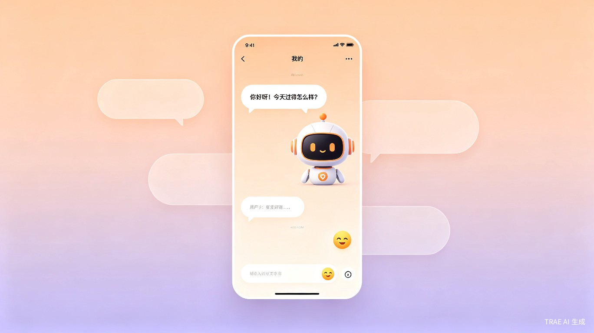
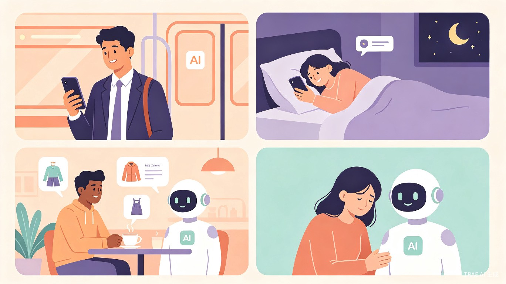

创意介绍
AI生活小伙伴是一款基于AI大模型技术开发的移动端应用，旨在为现代都市人提供随时在线的情感陪伴、生活助手和娱乐互动服务。
想解决什么问题
现代都市人生活节奏快、压力大，常常感到孤独和缺乏陪伴。日常生活中有大量碎片化时间（如通勤、等待、睡前）未被充分利用，人们渴望有一个随时在线、懂你心意的智能伙伴来填补这些时刻。
灵感来源
灵感来源于当下年轻人对"情绪价值"的高度重视，以及AI大模型技术的飞速发展。我们希望借助TRAE的AI能力，打造一个不只是工具、更像朋友的智能体，让科技真正温暖人心。

核心功能
情感陪伴
24小时在线倾听你的心事，提供温暖的回应和心理支持，做你最忠实的倾听者。
生活助手
帮你做日常小决策：今天穿什么、吃什么、周末去哪玩，让生活更轻松。
娱乐互动
陪你玩游戏、讲笑话、聊八卦，用有趣的内容填满你的碎片时间。
情绪管理
识别你的情绪状态，提供正向鼓励和放松建议，帮助你保持积极心态。
目标用户及痛点
面向哪些用户
18-35岁的都市年轻人群，包括独居青年、职场新人、学生群体，以及需要情感陪伴和心理支持的泛用户群体。
使用场景
-
通勤路上 — 无聊时想找人聊天解闷，打发碎片时间
-
深夜独处 — 感到孤独需要陪伴和倾听，倾诉心事
-
情绪低落 — 需要心理疏导和正向鼓励，走出负面情绪
-
日常决策 — 如今天穿什么、吃什么等生活小困扰
-
碎片时间 — 等待、休息时想要轻松有趣的互动

当前痛点
- 没有产品时，用户只能刷短视频或社交媒体打发时间，容易陷入"信息茧房"和"越刷越空虚"的恶性循环
- 向朋友倾诉有时间和社交压力，专业心理咨询门槛高且费用昂贵
- 现有AI助手过于工具化，缺乏情感温度和个性化互动
交互体验 Demo
以下是一个模拟的聊天界面，展示AI生活小伙伴如何与用户进行温暖有趣的互动：
AI
小伴
在线 · 你的AI生活小伙伴
价值与意义
社会价值
缓解当代社会普遍存在的"孤独经济"问题，为用户提供低成本、随时可及的情感支持，促进心理健康。
效率提升
帮助用户高效利用碎片时间，减少无效信息浏览，提升生活决策效率和质量。
商业价值
情感陪伴类AI应用市场正处于高速增长期，用户付费意愿强，可拓展多元化变现模式。
市场前景
情感陪伴类AI应用市场正处于高速增长期，用户付费意愿强（会员订阅、虚拟礼物、个性化定制等）。同时可与内容生态结合，如IP联名、UGC内容创作等多元化变现模式。积累的用户情感数据（脱敏后）可反哺AI模型优化，形成技术壁垒。
技术亮点
- 基于TRAE AI能力：充分利用TRAE的大模型能力，实现自然流畅的对话体验
- 情感识别引擎：通过多模态分析识别用户情绪状态，提供个性化回应
- 记忆系统：记住用户的喜好、习惯和重要事件，越用越懂你
- 隐私保护：本地加密存储敏感数据，确保用户隐私安全